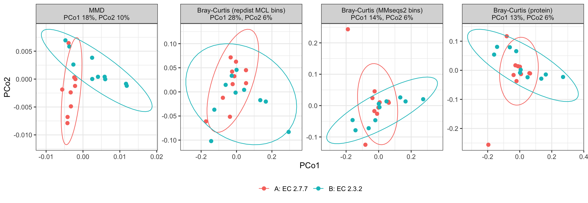
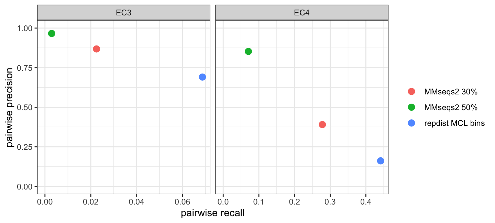

Question. Can representation-aware analysis recover a condition-level functional difference when the proteins carrying each function belong to different sequence clusters in every sample?
Two coherent functional states are compared symmetrically: condition A is enriched for one EC3, condition B for another, and within a condition no 50% MMseqs2 sequence cluster is enriched in two samples. An EC3 class spans many sequence families and often several folds, so this is harder and closer to metaproteomics than the FunFam positive control of Simulation 1. The page ends with how the MCL bins of the same universe group proteins against the EC labels.
library(repdist)
library(ggplot2)
library(vegan)Twenty samples, two conditions of ten, follow the negative-binomial model of Simulation 1, repeated here so this page stands on its own. Every protein of the universe is present at baseline in every sample; sample \(i\) has expected composition
\[ p_i = (1 - \rho)\,\pi + \rho\, q_i , \]
where \(\pi_j \propto \mathrm{LogNormal}(0, 1)\) is the common baseline and \(q_i\) spreads its mass evenly over sample \(i\)’s enriched proteins. The signal strength \(\rho\) is the expected share of abundance on the enriched proteins: a defined mass, not a fold change. Counts have mean \(\mu_{ij} = s_i D p_{ij}\) with depth \(D = 2 \times 10^4\) and size factor \(s_i \sim \mathrm{LogNormal}(0, 0.25)\), and variance \(\mu + \phi\mu^2\), with a DESeq2-like dispersion trend at each count’s own mean, \(\phi_{ij} = (0.1 + 1/\mu_{ij})\, e_j\), \(e_j \sim \mathrm{LogNormal}(0, 0.5)\). The \(k\)-th enriched protein of the second group takes the baseline abundance of the \(k\)-th of the first, so the groups also match on the baseline of the proteins that carry the signal.
The representative signal strength is \(\rho\) = 2%, fixed before any result: in the source study of the case study, glycoside hydrolases rose from under 1% to over 2.5% of the metaproteome on the yeast diet (Blakeley-Ruiz et al. 2025).
depth <- 2e4
rho_example <- 0.02
nb_counts <- function(up, ids, rho, pairs) {
n <- length(up)
pi <- setNames(rlnorm(length(ids)), ids)
pi[pairs[, 2]] <- pi[pairs[, 1]] # matched baseline of enriched proteins
pi <- pi / sum(pi)
s <- rlnorm(n, 0, 0.25)
e <- rlnorm(length(ids), 0, 0.5)
p <- matrix((1 - rho) * pi, n, length(ids), byrow = TRUE,
dimnames = list(names(up), ids))
for (j in seq_len(n)) {
p[j, up[[j]]] <- p[j, up[[j]]] + rho / length(up[[j]])
}
mu <- s * depth * p
phi <- (0.1 + 1 / mu) * rep(e, each = n)
matrix(rnbinom(length(mu), mu = mu, size = 1 / phi), n,
dimnames = dimnames(p))
}sample_mmd(), the maximum mean
discrepancy between samples under a Gaussian kernel on the protein
embeddings (see the Reference).protein_similarity() → bin_proteins() →
bin_glom(), then Bray-Curtis on the bin counts. The bins
depend only on the universe, so they are built once, with package
defaults (predicted TM-score ≥ 0.7, coverage ≥ 0.5, inflation 2).PERMANOVA (adonis2()) (Anderson 2001) tests
whether the groups differ in their distance-based centroids; PERMDISP
(betadisper() and permutest()) (Anderson
2006) tests whether they differ in spread. Both use 999
permutations in vegan (Oksanen et al.
2025); a test detects at p ≤ 0.05.
group_tests <- function(D, group) {
set.seed(1)
a <- adonis2(D ~ group, data = data.frame(group = group),
permutations = 999)
set.seed(1)
pd <- permutest(betadisper(D, group), permutations = 999)
c(`PERMANOVA R2` = a$R2[1], `PERMANOVA p` = a$`Pr(>F)`[1],
`PERMDISP p` = pd$tab[1, "Pr(>F)"])
}
test_all <- function(D, group) {
t(vapply(D, group_tests, numeric(3), group = group))
}u <- readRDS(file.path("curated", "simulation_universe.rds"))
mm <- readRDS(file.path("curated", "simulation_mmseqs2.rds"))
# the sequence clusters were computed on this exact universe file
stopifnot(identical(mm$provenance$universe_md5,
unname(tools::md5sum(file.path("curated", "simulation_universe.rds")))))
ec_proteins <- u$proteins
ann <- u$annotation
stopifnot(identical(ann$protein, names(ec_proteins)),
identical(mm$clusters$protein, names(ec_proteins)))
ann$mmseqs50 <- mm$clusters$mmseqs50
ann$mmseqs30 <- mm$clusters$mmseqs30
c(proteins = length(ec_proteins), EC3 = length(unique(ann$ec3)),
EC4 = length(unique(ann$ec4)))
#> proteins EC3 EC4
#> 4920 229 2679
u$provenance$steps
#> candidates single_complete_ec4 length_50_1000
#> 18779 5903 5794
#> no_U_or_O uniref50_representatives
#> 5786 4920The proteins are UniProtKB/Swiss-Prot entries (The UniProt Consortium
2025) (release 2026_03) from Bacteria and Archaea,
non-fragments, with an experimentally supported catalytic activity. An
entry is kept only if every EC number it carries, on any reaction or in
its name, is one complete four-level number (EC4) and at least one
reaction with that number has experimental evidence (ECO:0000269).
Full-length sequences of 50 to 1000 residues (the TM-Vec head’s training
range) without selenocysteine or pyrrolysine are kept, one protein per
UniRef50 cluster (Suzek et al.
2015), and embedded with
embed_proteins(model = "tmvec")
(data-raw/simulation_universe.R).
data-raw/simulation_mmseqs2.R clusters the same
sequences with MMseqs2 18.8cc5c. The primary clustering uses 50%
identity, the usual protein-family level (as UniRef50); 30% identity is
a permissive sensitivity analysis. Both require the alignment to cover
80% of both sequences (--cov-mode 0) and use the most
sensitive prefilter (-s 7.5):
mm$provenance[c("cluster_50", "cluster_30")]
#> $cluster_50
#> [1] "mmseqs easy-cluster <tmp>/universe.fasta <tmp>/c0.5 <tmp>/work --min-seq-id 0.5 -c 0.8 --cov-mode 0 --cluster-mode 0 -s 7.5"
#>
#> $cluster_30
#> [1] "mmseqs easy-cluster <tmp>/universe.fasta <tmp>/c0.3 <tmp>/work --min-seq-id 0.3 -c 0.8 --cov-mode 0 --cluster-mode 0 -s 7.5"
mm$provenance$n_clusters
#> mmseqs50 mmseqs30
#> 4454 2945
# every 50% cluster lies inside one 30% cluster
all(tapply(ann$mmseqs30, ann$mmseqs50, function(v) length(unique(v))) == 1)
#> [1] TRUEBecause the universe is already one protein per UniRef50 cluster, the 50% clustering is close to the proteins themselves.
Each sample is enriched in two proteins of its condition’s EC3, and every enriched protein of a condition comes from a different 50% cluster. An EC3 is eligible if it spans at least 10 × 2 = 20 distinct 50% clusters. Eligibility uses only the EC labels and the MMseqs2 clusters, never the embeddings, the MCL bins or any result. The eligible EC3s are shuffled with a fixed seed and paired in order, so each EC3 enters exactly one contrast.
n_per_group <- 10L
n_enriched <- 2L
k <- n_per_group * n_enriched
clusters_per <- function(level) {
tapply(ann$mmseqs50, ann[[level]], function(v) length(unique(v)))
}
n50 <- clusters_per("ec3")
eligible <- sort(names(n50)[n50 >= k])
c(EC3 = length(n50), eligible = length(eligible),
`eligible EC4` = sum(clusters_per("ec4") >= k))
#> EC3 eligible eligible EC4
#> 229 56 5
set.seed(20261008)
shuffled <- sample(eligible)
contrasts <- data.frame(A = shuffled[c(TRUE, FALSE)],
B = shuffled[c(FALSE, TRUE)])
nrow(contrasts)
#> [1] 28Only 5 EC4 classes meet the same rule, too few for an EC4 simulation, so EC4 is used to score the bins below.
For contrast \(c\) (seed \(c\)), condition A draws 20 distinct 50% clusters of EC3-A and one protein from each, two per sample. To keep the enrichment from collapsing into one enzyme, clusters are taken one per EC4 of the class before a second from any EC4, in random order. Condition B does the same in EC3-B, excluding any cluster A used. The conditions match on everything in the count model; only the class carrying the signal differs.
\(\rho\) takes the values 0, 1%, 2%, 5% and 10%. At \(\rho = 0\) both conditions have the same distribution: a null sanity check. Each contrast has one simulated count realisation per \(\rho\), so the counts below are shares of contrasts detected, not estimates of type-I error or power. A contrast uses the same seed at every \(\rho\), so its enriched proteins, baseline, size factors and dispersions do not change with the signal strength.
rhos <- c(0, 0.01, 0.02, 0.05, 0.10)
mm50 <- setNames(ann$mmseqs50, ann$protein)
mm30 <- setNames(ann$mmseqs30, ann$protein)
draw_enriched <- function(ec, exclude = character()) {
cand <- unique(ann[ann$ec3 == ec & !ann$mmseqs50 %in% exclude,
c("mmseqs50", "ec4")])
cand <- cand[sample.int(nrow(cand)), ]
cand <- cand[!duplicated(cand$mmseqs50), ]
# one cluster per EC4 before a second from any EC4
cand <- cand[order(ave(seq_len(nrow(cand)), cand$ec4, FUN = seq_along)), ]
vapply(seq_len(k), function(r) {
p <- ann$protein[ann$mmseqs50 == cand$mmseqs50[r] &
ann$ec4 == cand$ec4[r]]
p[sample.int(length(p), 1L)]
}, "")
}
enriched <- function(i) {
set.seed(i)
a <- draw_enriched(contrasts$A[i])
b <- draw_enriched(contrasts$B[i], exclude = mm50[a])
# no 50% cluster is enriched twice within a condition
stopifnot(!anyDuplicated(mm50[a]), !anyDuplicated(mm50[b]))
up <- unname(split(c(a, b), rep(seq_len(2 * n_per_group),
each = n_enriched)))
names(up) <- sprintf("s%02d", seq_along(up))
list(up = up, pairs = cbind(a, b),
group = factor(rep(c("A", "B"), each = n_per_group)))
}
simulate_ec <- function(i, rho) {
d <- enriched(i) # sets the seed; the counts continue the same stream
d$counts <- nb_counts(d$up, ann$protein, rho, d$pairs)
d
}S <- protein_similarity(ec_proteins, n_cores = BiocParallel::multicoreWorkers())
bins <- bin_proteins(S)
glom <- function(counts, cluster) t(rowsum(t(counts), cluster[colnames(counts)]))
distances_ec <- function(counts) {
list(
MMD = sample_mmd(counts, ec_proteins),
`Bray-Curtis (repdist MCL bins)` = vegdist(bin_glom(counts, bins),
"bray"),
`Bray-Curtis (MMseqs2 bins)` = vegdist(glom(counts, mm50), "bray"),
`Bray-Curtis (protein)` = vegdist(counts, "bray"),
`Bray-Curtis (MMseqs2 30% bins)` = vegdist(glom(counts, mm30), "bray")
)
}The fifth distance, MMseqs2 bins at 30% identity, is the sensitivity analysis; it is reported in the tables but not in the ordination.
The first contrast of the seeded pairing, at \(\rho\) = 2%; both were fixed before any result.
sim <- simulate_ec(1, rho_example)
unlist(contrasts[1, ])
#> A B
#> "2.7.7" "2.3.2"
enr <- data.frame(sample = rep(names(sim$up), lengths(sim$up)),
condition = rep(sim$group, lengths(sim$up)), protein = unlist(sim$up))
enr <- cbind(enr, ann[match(enr$protein, ann$protein),
c("ec4", "name", "mmseqs50", "mmseqs30")])
enr$mcl_bin <- bins$membership[enr$protein]
# distinct labels among each condition's 20 enriched proteins
t(sapply(split(enr, enr$condition), function(d) c(
`50% clusters` = length(unique(d$mmseqs50)),
`30% clusters` = length(unique(d$mmseqs30)),
`MCL bins` = length(unique(d$mcl_bin)), EC4 = length(unique(d$ec4)))))
#> 50% clusters 30% clusters MCL bins EC4
#> A 20 20 17 20
#> B 20 17 12 16
# realised share of each sample's counts on its enriched proteins
tapply(vapply(seq_along(sim$up), function(i) {
sum(sim$counts[i, sim$up[[i]]]) / sum(sim$counts[i, ])
}, numeric(1)), sim$group, median)
#> A B
#> 0.02200388 0.02131370
D <- distances_ec(sim$counts)
res <- test_all(D, sim$group)
knitr::kable(res, digits = 3)| PERMANOVA R2 | PERMANOVA p | PERMDISP p | |
|---|---|---|---|
| MMD | 0.115 | 0.001 | 0.704 |
| Bray-Curtis (repdist MCL bins) | 0.061 | 0.207 | 0.220 |
| Bray-Curtis (MMseqs2 bins) | 0.054 | 0.263 | 0.487 |
| Bray-Curtis (protein) | 0.055 | 0.222 | 0.549 |
| Bray-Curtis (MMseqs2 30% bins) | 0.057 | 0.220 | 0.314 |
Ellipses are 95% ellipses per condition (multivariate t).

The representative is one of 28 contrasts. Every contrast is simulated at every \(\rho\), so the result can be checked beyond one pair of enzyme classes.
bench2 <- do.call(rbind, lapply(seq_len(nrow(contrasts)), function(i) {
do.call(rbind, lapply(rhos, function(rho) {
s <- simulate_ec(i, rho)
r <- test_all(distances_ec(s$counts), s$group)
data.frame(contrast = i, A = contrasts$A[i], B = contrasts$B[i],
rho = rho, method = rownames(r), r, row.names = NULL,
check.names = FALSE)
}))
}))
bench2$method <- factor(bench2$method, names(D))
# the representative contrast is the benchmark's contrast 1 at rho = 2%
stopifnot(isTRUE(all.equal(unname(res[, "PERMANOVA p"]),
bench2$`PERMANOVA p`[bench2$contrast == 1 & bench2$rho == rho_example])))Contrasts detected by PERMANOVA, out of 28, with the number also significant by PERMDISP in parentheses. The \(\rho = 0\) column is the null sanity check (one realisation per contrast; about 1.4 detections would be expected by chance at α = 0.05).
| ρ = 0% | ρ = 1% | ρ = 2% | ρ = 5% | ρ = 10% | |
|---|---|---|---|---|---|
| MMD | 0 (1) | 26 (4) | 27 (2) | 28 (6) | 28 (3) |
| Bray-Curtis (repdist MCL bins) | 0 (1) | 0 (1) | 0 (1) | 4 (1) | 12 (2) |
| Bray-Curtis (MMseqs2 bins) | 0 (0) | 0 (1) | 0 (1) | 0 (0) | 0 (1) |
| Bray-Curtis (protein) | 0 (0) | 0 (1) | 0 (1) | 0 (0) | 0 (1) |
| Bray-Curtis (MMseqs2 30% bins) | 0 (0) | 0 (1) | 0 (2) | 1 (1) | 3 (1) |
This benchmark is separate from the sample-level contrasts but uses the same Swiss-Prot universe. Its MCL bins were built from embeddings and alignments alone; EC labels are used only here. The two MMseqs2 clusterings are scored the same way for comparison. With \(n_k\) members of label \(k\) in a group of size \(n\):
Purity and precision ignore singletons, so many small, pure groups score high on both while splitting each class across groups; recall measures that splitting.
groupings <- list(`repdist MCL bins` = bins$membership,
`MMseqs2 50%` = mm50, `MMseqs2 30%` = mm30)
size_tab <- t(vapply(groupings, function(m) {
sizes <- as.vector(table(m))
c(groups = length(sizes), `multi-member` = sum(sizes > 1),
`singleton proteins (%)` = 100 * sum(sizes == 1) / length(m),
table(cut(sizes, c(0, 1, 2, 5, 10, 50, Inf),
labels = c("1", "2", "3-5", "6-10", "11-50", ">50"))),
largest = max(sizes))
}, numeric(10)))
knitr::kable(size_tab, digits = 1)| groups | multi-member | singleton proteins (%) | 1 | 2 | 3-5 | 6-10 | 11-50 | >50 | largest | |
|---|---|---|---|---|---|---|---|---|---|---|
| repdist MCL bins | 1662 | 842 | 16.7 | 820 | 342 | 305 | 120 | 74 | 1 | 59 |
| MMseqs2 50% | 4454 | 359 | 83.2 | 4095 | 290 | 66 | 3 | 0 | 0 | 8 |
| MMseqs2 30% | 2945 | 941 | 40.7 | 2004 | 523 | 343 | 59 | 16 | 0 | 39 |
Columns 1 to >50 count groups by
size.
Pairwise precision, recall and F1 come from
clusterCrit::extCriteria() (F1 is its Czekanowski-Dice
index).
labels <- list(EC3 = setNames(ann$ec3, ann$protein),
EC4 = setNames(ann$ec4, ann$protein))
scores <- function(m, lab) {
lab <- lab[names(m)]
tab <- table(m, lab)
multi <- rowSums(tab) > 1
pr <- clusterCrit::extCriteria(as.integer(factor(lab)),
as.integer(factor(m)), c("Precision", "Recall", "Czekanowski_Dice"))
c(purity = mean(apply(tab[multi, ], 1, max) / rowSums(tab[multi, ])),
precision = pr$precision, recall = pr$recall,
F1 = pr$czekanowski_dice)
}
ec_scores <- do.call(rbind, lapply(names(labels), function(level) {
do.call(rbind, lapply(names(groupings), function(g) {
data.frame(level = level, grouping = g,
t(scores(groupings[[g]], labels[[level]])))
}))
}))
knitr::kable(ec_scores, digits = 3, row.names = FALSE)| level | grouping | purity | precision | recall | F1 |
|---|---|---|---|---|---|
| EC3 | repdist MCL bins | 0.903 | 0.690 | 0.069 | 0.125 |
| EC3 | MMseqs2 50% | 0.983 | 0.966 | 0.003 | 0.006 |
| EC3 | MMseqs2 30% | 0.948 | 0.868 | 0.022 | 0.044 |
| EC4 | repdist MCL bins | 0.695 | 0.161 | 0.441 | 0.236 |
| EC4 | MMseqs2 50% | 0.921 | 0.852 | 0.071 | 0.131 |
| EC4 | MMseqs2 30% | 0.780 | 0.390 | 0.278 | 0.325 |
The three groupings sit in different regimes rather than on one scale:

MMseqs2 gives very pure sequence families that split each enzyme class into many groups, most of them singletons. The MCL bins group across sequence-family boundaries, with far fewer singletons, while keeping high EC3 coherence; their EC3 recall is still low in absolute terms. At EC4 the MCL bins recover more same-enzyme pairs but join more proteins of different EC4s, so the 30% clusters are more precise there and score a higher F1: exact EC4 reconstruction is better served by sequence clustering in this benchmark. repdist MCL bins occupy a middle ground between sequence-family fragmentation and broad functional merging. They are representation-aware abundance units, not reconstructions of EC classes.
Under sequence-disjoint functional contrasts, graded representation similarity retains relationships that protein identity and hard sequence bins may discard, and hard representation bins retain part of them. The result is conditional on that regime, built here by construction; it does not show that structure is better than sequence. The case study applies the same tools to a real metaproteomic contrast without known functional truth, and MCL parameters shows how the graph thresholds and inflation move the bins scored above.
sessionInfo()
#> R version 4.5.2 (2025-10-31)
#> Platform: aarch64-apple-darwin20
#> Running under: macOS 27.0.1
#>
#> Matrix products: default
#> BLAS: /System/Library/Frameworks/Accelerate.framework/Versions/A/Frameworks/vecLib.framework/Versions/A/libBLAS.dylib
#> LAPACK: /Library/Frameworks/R.framework/Versions/4.5-arm64/Resources/lib/libRlapack.dylib; LAPACK version 3.12.1
#>
#> locale:
#> [1] en_US/en_US/en_US/C/en_US/en_US
#>
#> time zone: America/New_York
#> tzcode source: internal
#>
#> attached base packages:
#> [1] stats graphics grDevices utils datasets methods base
#>
#> other attached packages:
#> [1] vegan_2.7-5 permute_0.9-10 ggplot2_4.0.3 repdist_0.99.0
#>
#> loaded via a namespace (and not attached):
#> [1] sass_0.4.10 generics_0.1.4 lattice_0.22-9
#> [4] MCL_1.0 digest_0.6.39 magrittr_2.0.5
#> [7] evaluate_1.0.5 grid_4.5.2 RColorBrewer_1.1-3
#> [10] fastmap_1.2.0 jsonlite_2.0.0 Matrix_1.7-5
#> [13] mgcv_1.9-4 scales_1.4.0 Biostrings_2.78.0
#> [16] codetools_0.2-20 jquerylib_0.1.4 cli_3.6.6
#> [19] expm_1.0-0 rlang_1.3.0 crayon_1.5.3
#> [22] XVector_0.50.0 splines_4.5.2 withr_3.0.3
#> [25] cachem_1.1.0 yaml_2.3.12 otel_0.2.0
#> [28] tools_4.5.2 parallel_4.5.2 BiocParallel_1.44.0
#> [31] dplyr_1.2.1 BiocGenerics_0.56.0 vctrs_0.7.3
#> [34] R6_2.6.1 stats4_4.5.2 lifecycle_1.0.5
#> [37] Seqinfo_1.0.0 S4Vectors_0.48.1 IRanges_2.44.0
#> [40] MASS_7.3-65 cluster_2.1.8.2 pkgconfig_2.0.3
#> [43] pillar_1.11.1 bslib_0.11.0 gtable_0.3.6
#> [46] glue_1.8.1 xfun_0.58 tibble_3.3.1
#> [49] tidyselect_1.2.1 knitr_1.51 farver_2.1.2
#> [52] htmltools_0.5.9 nlme_3.1-169 clusterCrit_1.3.0
#> [55] labeling_0.4.3 rmarkdown_2.31 compiler_4.5.2
#> [58] S7_0.2.2